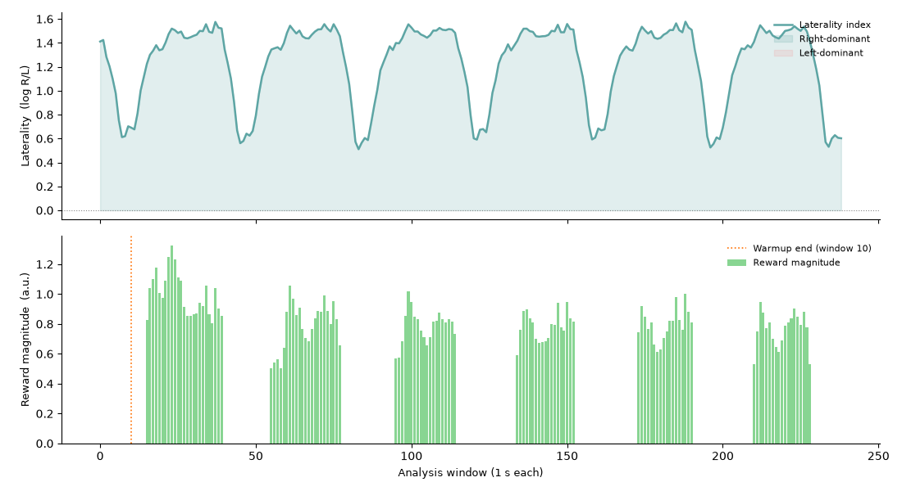

Note
Go to the end to download the full example code.
Alpha laterality neurofeedback with real-time adaptive protocol#
Frontal alpha asymmetry is a well-established biomarker in clinical neuroscience, particularly in depression and attention research.
This example demonstrates the full closed-loop pipeline in real time:
Simulate an EEG recording with right-hemisphere alpha enhancement using
simulate_raw().Stream it over a mock LSL player (same path as a live amplifier).
Record a brief resting-state baseline.
Run
record_main()extracting thelateralitymodality and passing aZScoreProtocolthat evaluates each window in real time — the reward gate fires during acquisition, not post-hoc.Plot the laterality index alongside the per-window reward magnitudes.
The laterality modality computes:
where \(P\) is mean alpha power per hemisphere. Positive values indicate right-dominant alpha; the protocol rewards the participant when the z-scored laterality exceeds 0.5 standard deviations above the running mean.
Note
Protocols are evaluated inside the acquisition loop on every analysis
window. The reward signal (nf.reward_data) is therefore available the
moment record_main returns — no separate offline pass is needed.
Simulate EEG with right-lateralised alpha#
simulate_raw() uses the MNE fsaverage template and a
forward model to project a sinusoidal dipole from a right occipital label
to 64 biosemi64 scalp electrodes.
import tempfile
from pathlib import Path
import matplotlib.pyplot as plt
import numpy as np
from mne_rt import RTStream
from mne_rt.protocols import ZScoreProtocol
from mne_rt.tools import simulate_raw
tmp = Path(tempfile.mkdtemp(prefix="ant_laterality_"))
fname_sim = tmp / "right_alpha.fif"
simulate_raw(
brain_label="lateraloccipital-rh",
frequency=10.0,
amplitude=1.5,
duration=4.0,
gap_duration=2.0,
n_repetition=8,
start=1.0,
data_type="eeg",
sfreq=256.0,
fname_save=str(fname_sim),
verbose=False,
)
/home/runner/work/mne-rt/mne-rt/docs/source/../../src/mne_rt/tools/simulation.py:222: RuntimeWarning: No average EEG reference present in info["projs"], covariance may be adversely affected. Consider recomputing covariance using with an average eeg reference projector added.
add_noise(raw, cov, iir_filter=iir_filter, verbose=verbose)
/home/runner/work/mne-rt/mne-rt/docs/source/../../src/mne_rt/tools/simulation.py:233: RuntimeWarning: This filename (/tmp/ant_laterality_d6hbwcr9/right_alpha.fif) does not conform to MNE naming conventions. All raw files should end with raw.fif, raw_sss.fif, raw_tsss.fif, _meg.fif, _eeg.fif, _ieeg.fif, raw.fif.gz, raw_sss.fif.gz, raw_tsss.fif.gz, _meg.fif.gz, _eeg.fif.gz or _ieeg.fif.gz
raw.save(fname=Path(fname_save), overwrite=True)
Session setup#
RTStream manages the full pipeline. mock_lsl=True
starts a PlayerLSL that replays the FIF file at
its native sampling rate — identical to connecting to a live amplifier.
subjects_dir = tmp / "subjects"
subjects_dir.mkdir()
nf = RTStream(
subject_id="sub01",
session="01",
subjects_dir=str(subjects_dir),
montage="biosemi64",
data_type="eeg",
verbose=False,
)
nf.connect_to_lsl(mock_lsl=True, fname=str(fname_sim), verbose=False)
nf.record_baseline(baseline_duration=10, verbose=False)
/home/runner/work/mne-rt/mne-rt/docs/source/../../src/mne_rt/rt_stream.py:943: RuntimeWarning: This filename (/tmp/ant_laterality_d6hbwcr9/right_alpha.fif) does not conform to MNE naming conventions. All raw files should end with raw.fif, raw_sss.fif, raw_tsss.fif, _meg.fif, _eeg.fif, _ieeg.fif, raw.fif.gz, raw_sss.fif.gz, raw_tsss.fif.gz, _meg.fif.gz, _eeg.fif.gz or _ieeg.fif.gz
self._mock_player = Player(
Real-time closed-loop session with ZScoreProtocol#
The ZScoreProtocol is passed directly to
record_main via the protocol argument. On every 1-second window
the laterality value is both stored in nf.nf_data and evaluated by the
protocol — no post-hoc loop required.
warmup_windows=10 means the first 10 windows seed the running statistics;
the reward gate activates from window 11 onward.
proto = ZScoreProtocol(
direction="up",
warmup_windows=10,
zscore_threshold=0.5,
smoothing=0.1,
)
nf.record_main(
duration=120,
modality=["laterality"],
winsize=1.0,
protocol=proto,
show_nf_signal=False,
show_raw_signal=False,
show_topo=False,
verbose=False,
)
lat_vals = np.asarray(nf.nf_data["laterality"])
reward_vals = np.asarray(nf.reward_data.get("laterality", []))
n_rewarded = int((reward_vals > 0).sum())
pct_reward = 100.0 * n_rewarded / max(len(reward_vals), 1)
print(
f"Windows: {len(lat_vals)} | Rewarded: {n_rewarded} ({pct_reward:.0f} %) | "
f"Protocol: μ={proto.mean_:.4f} σ={proto.std_:.4f} "
f"z={proto.zscore:.2f}"
)
Windows: 239 | Rewarded: 124 (52 %) | Protocol: μ=1.2335 σ=0.3296 z=-1.91
Visualise laterality signal and real-time rewards#
The top panel shows the raw laterality index per 1-second window. Blue shading marks windows where right-hemisphere alpha was dominant (L > 0); red shading marks left dominance (L < 0). Because the simulation injects a 10 Hz sine wave into the right lateral-occipital cortex, the signal should trend positive throughout the session.
The bottom panel shows the reward magnitude issued by
ZScoreProtocol on each window — non-zero only
after the warmup period (orange dashed line) once the running statistics
are initialised. Rewards accumulate whenever the z-scored laterality
exceeds the threshold of 0.5 σ above the running mean.
fig, (ax1, ax2) = plt.subplots(
2, 1, figsize=(11, 6), sharex=True, constrained_layout=True
)
t = np.arange(len(lat_vals))
ax1.plot(t, lat_vals, color="#5DA5A4", lw=1.8, label="Laterality index")
ax1.axhline(0, ls=":", lw=0.8, color="#888")
ax1.fill_between(t, lat_vals, 0, where=lat_vals > 0, alpha=0.18, color="#5DA5A4",
label="Right-dominant")
ax1.fill_between(t, lat_vals, 0, where=lat_vals < 0, alpha=0.12, color="#FF6B6B",
label="Left-dominant")
ax1.set_ylabel("Laterality (log R/L)", fontsize=9)
ax1.legend(fontsize=8, frameon=False, loc="upper right")
ax1.spines[["top", "right"]].set_visible(False)
if len(reward_vals):
t_rew = np.arange(len(reward_vals))
ax2.bar(t_rew, reward_vals, color="#6BCB77", alpha=0.8, label="Reward magnitude")
ax2.axvline(proto.warmup_windows, ls=":", lw=1.2, color="#FF6F00",
label=f"Warmup end (window {proto.warmup_windows})")
ax2.set_ylabel("Reward magnitude (a.u.)", fontsize=9)
ax2.set_xlabel("Analysis window (1 s each)", fontsize=9)
ax2.legend(fontsize=8, frameon=False, loc="upper right")
ax2.spines[["top", "right"]].set_visible(False)
plt.tight_layout()

/home/runner/work/mne-rt/mne-rt/examples/ex_alpha_laterality_nf.py:172: UserWarning: The figure layout has changed to tight
plt.tight_layout()
Clean up#
Stop the mock LSL player and disconnect the stream so subsequent examples in the Sphinx Gallery build do not encounter residual streams.
if hasattr(nf, "stream") and getattr(nf.stream, "connected", False):
nf.stream.disconnect()
if getattr(nf, "_mock_player", None) is not None:
try:
nf._mock_player.stop()
except Exception:
pass
Total running time of the script: (3 minutes 9.414 seconds)